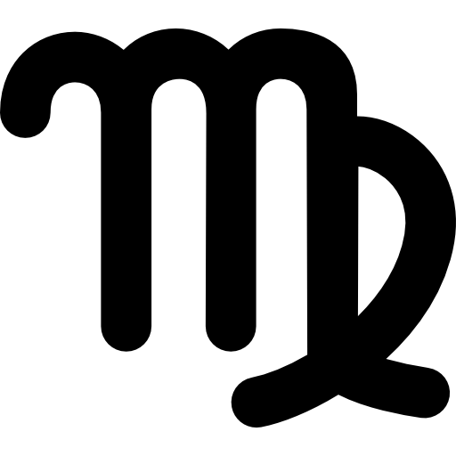
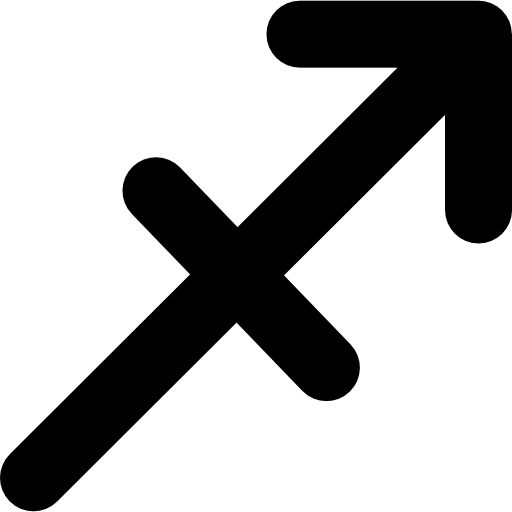

Bélier, Gémeaux, Lion, Balance, Sagittaire, Verseau
Lié à l'élément feu, le Bélier fait preuve d'énergie, d'audace et de courage. On l'imagine tout démolir sur son passage ! Premier signe du zodiaque, il est capable d'entreprendre, c'est un meneur ! Son défaut est d'agir avant de réfléchir. C'est pourquoi il faut mieux prendre des pincettes avec lui, car il peut faire preuve d'agressivité, il est entier ! Cet animal à cornes a besoin de dépenser son énergie dans une activité physique, dans son travail. On reconnaît dans cette description Victoria Beckham !
Mercure fait durer le plaisir en Gémeaux (un ami). Le plaisir de travailler en équipe. D’entendre que vos idées sont épatantes, vos actions percutantes. Votre entourage vous renouvelle sa confiance. Le recul de Mercure, jusqu’au 22, vous fait prendre conscience de l’importance de votre notoriété. Renforcée, elle vous permet de nouer de nouveaux contacts et d’élargir votre champ d’action. Charisme et compétences font la différence. Sur le plan affectif, Vénus pèse de tout son poids sur vos épaules. La pression familiale est forte. On vous demande beaucoup, d’être partout. Difficile de tenir le coup.

Taureau, Cancer, Vierge, Scorpion, Capricorne, Poisson
Lié à l'élément terre, le Taureau est sérieux et sa personnalité est stable. Pour cette raison, certaines personnes peuvent s'ennuyer à ses côtés ! Loin de lui, les sautes d'humeur. Son caractère est parfait pour construire un foyer et élever des enfants. Ses cornes marquent une affirmation de soi. Il aime le travail bien fait au point d'être un brin perfectionniste ! La jeune actrice américaine Jessica Alba est de ce signe. Elle joue pour le cinéma et les séries télévisées.
Depuis le 14 mai et jusqu’au 28 juillet, Jupiter fait un saut de puce en Poissons. Une aubaine pour les affaires du Taureau. A condition de sortir de votre zone de confort. Jupiter vous veut intrépide, l’esprit visionnaire. Héroïque, vous prenez des risques en changeant de secteur d’activité, en créant votre propre affaire. Même inspiration à trouver à la maison pour pimenter les relations. Une chance, Vénus libère votre imagination du 3 au 27. Aucun problème pour épater votre conjoint, en créant l’événement. En Cancer, Vénus vous amène à jouer un rôle protecteur en famille par des actions à mener en faveur de vos proches.
Bélier, Gémeaux, Lion, Vierge, Balance, Sagittaire, Verseau
Liés à l'élément air, les Gémeaux sont des êtres frivoles, légers. Ils aiment rire et ne rien prendre au sérieux ! On retrouve d'ailleurs dans ce signe Courteney Cox, l'actrice de la célèbre série télévisée « Friends » ! Sa légèreté d'esprit ne lui enlève en rien son intellectualité. Son humour est subtil ! Les Gémeaux sont sociables et s'intègrent bien à leur environnement social. On les retrouve en général dans les métiers de la communication.
Déjà là en mai, Mercure (votre planète fétiche) vous réserve un anniversaire populaire. Les contacts sociaux sont la clé de voûte de votre succès. Ils viennent en renfort, vous aider à surmonter les obstacles, que Jupiter dresse sur votre route. Des épreuves matérielles le plus souvent. Votre situation change. Voulue ou subie, la prévision ne le précise pas. Le plus important consiste à réagir vite et à vous adapter aux événements. D’où l’intérêt de suivre et d’appliquer les conseils de vos alliés. En entrant en Lion le 12, Mars provoque aussi d’heureux hasards, qui vous permettent de reprendre la main en cas de pépin.

Taureau, Cancer, Vierge, Scorpion, Capricorne, Poissons
Les Cancers se planquent dans l'eau comme les écrevisses ! D’un tempérament calme, il faut savoir les laisser tranquilles ! Car à la moindre frayeur, ils glissent à l'intérieur de leur carapace ! Avec leurs pinces, ils s'agrippent au passé. Ce sont des êtres nostalgiques et sensibles. Ils aiment se rapprocher de leur famille, plus qu'élargir leur cercle amical. Discrets, ils possèdent une fibre artistique, mais n'aiment pas les projecteurs ! C'est d'ailleurs le cas d'Eva Green, une actrice française qui a fait ses débuts au théâtre.
Après Mars, c’est au tour de Vénus de prendre ses quartiers dans votre signe, du 3 au 27. Avec une parenthèse idyllique et romantique entre le 11 et le 19. Huit jours au cours desquels le duo Vénus/Uranus provoque un coup de foudre, crée l’événement si vous êtes en couple. Du 1er au 11, Mars parie sur votre combativité pour décrocher un emploi, réussir un concours, obtenir une mutation. La présence inédite et remarquée de Jupiter en Poissons favorise des situations gratifiantes, des rencontres épatantes. La période est propice à prendre un virage important, pour aller vers une vie et des projets qui vous ressemblent davantage.

Bélier, Gémeaux, Lion, Balance, Sagittaire, Verseau
Lié à l'élément feu, le Lion aime se montrer, discuter, jouer. Il voit grand et ne se satisfait pas des petites choses. La célébrité qui le représente le mieux est Madonna ! Contrairement au Cancer, il aime la lumière ! Le Lion a besoin de passion pour vivre, sinon il s'ennuie. Il aime tout ce qui brille, tout ce qui le lie au soleil, sa planète mère ! Mila Kunis, une actrice américaine, est de ce signe. Son physique, pulpeux, exprime bien le côté généreux du Lion !
Profitez de l’absence de Jupiter (jusqu’au 28 juillet) pour amorcer un virage, et pourquoi pas, changer de secteur d’activité. Mercure parie sur la communication pour transformer votre situation. Son séjour prolongé en Gémeaux est une aubaine sur le plan relationnel. Frappez aux portes, nouez des contacts, faites votre auto promo. L’entrée de Mars dans votre signe le 12 booste vos ambitions. Vous avez patienté, enduré, le moment est venu de reprendre le pouvoir sur vos désirs, pour les concrétiser avec succès. Le cœur passe au second plan, justement pour vous permettre de renforcer votre position, avant d’aimer en toute liberté cet été.

Taureau, Gémeaux, Cancer, Vierge, Scorpion, Capricorne, Poissons
Issue de l'élément terre, la Vierge est sérieuse, stable et concrète ! Raisonnable, aimant faire preuve de méthode, la Vierge est une personne modeste et de confiance. Souvent inquiète, elle préfère observer, analyser et se faire discrète. Dévouée, elle aide généreusement les autres au point parfois de se faire abuser. Blake Lively et Salma Hayek, actrices américaines, sont de ce signe.
La Vierge et le Gémeaux se partagent une même planète fétiche : Mercure. En Vierge, Mercure écrit. En Gémeaux, jusqu’au 11 juillet, Mercure parle. Votre mission consiste donc à exprimer votre point de vue, en prêtant l’oreille à celui de votre entourage. Dans le travail comme en amour, le dialogue est la pierre angulaire de la réussite. Vous préférez les actes aux mots, Mercure vous suggère d’inverser. Tomber d’accord d’abord, avant d’agir ensemble. Du 3 au 27, Vénus instaure un climat bienveillant en famille. On se plaît à se retrouver, à lancer des projets en commun. Une période idéale pour se réconcilier si l’on s’était fâché.

Bélier, Gémeaux, Lion, Balance, Sagittaire, Verseau
Naomi Watts, actrice de nationalité anglaise et vivant en Australie, est Balance. L'élément air domine sa personnalité. La Balance est par conséquent intellectuelle, aimant les jeux d'esprit. Elle représente la justice et l'équilibre, la juste mesure. Elle peut paraître sévère et stricte. Très droite, elle respecte des valeurs. On dit d'elle qu'elle se soucie de son image ; ce qui expliquerait peut-être pourquoi Kim Kardashian est aussi styliste.
Mercure en Gémeaux renforce votre charisme. Vous êtes irrésistible, tout le monde vous réclame. Cette ambiance conviviale contraste avec le climat pesant qui règne en famille. En Cancer, Vénus alourdit la charge par des situations déplaisantes ou des imprévus contrariants. Le moral flanche, le corps fatigue. L’arrivée de Mars en Lion le 12, tombe à pic pour vous donner du ressort. Vous rebondissez en prenant un peu de distance, chacun devant se débrouiller sans vous. Ce transit de Mars est à même de transformer votre cadre de vie. L’occasion de zoomer sur vos vrais désirs et de porter un regard neuf sur votre parcours social et affectif.

Taureau, Cancer, Vierge, Scorpion, Capricorne, Poissons
L'élément eau caractérise ce signe au caractère très affirmé ! Très centré sur lui-même, il peut paraître égoïste. Mais il est aussi sensible, au point d'en devenir parfois nerveux. Les Scorpions sont des gens entiers, parfois difficiles à cerner. Attirés par les choses secrètes, ils possèdent une aura mystérieuse, sombre. L'actrice américaine Ellen Pompeo est de ce signe. Elle est connue pour avoir joué dans la série télévisée Grey's Anatomy.
Les turbulences de janvier/février ont forgé votre expérience. Ni rancœur, ni regret, la fierté d’avoir surmonté les épreuves à force d’efforts, de courage et de créativité. À la veille de l’été, vous devriez occuper de nouvelles fonctions ou avoir changé d’environnement. Du 1er au 11, Mars toujours en Cancer concentre vos énergies autour de votre famille. Vous accompagnez, conseillez ou prenez des initiatives pour aider vos proches à s’orienter. Entre le 3 et le 27, Vénus (en Cancer aussi) instaure un climat de tendresse et de compréhension à la maison. Tout prête à penser que les vœux formulés à deux seront exaucés.

Bélier, Gémeaux, Lion, Balance, Sagittaire, Verseau
Le Sagittaire porte un arc et tire ses flèches. Il sait où il va et se montre combatif ! Sur sa monture, il avance dans la vie, a de l'ambition et défend sa liberté. L'élément feu lui donne toute l'énergie nécessaire afin de relever les défis ! Sociable, le Sagittaire possède beaucoup d'humour. L'actrice Julianne Moore est de ce signe. Son talent d'actrice a été reconnu plusieurs fois par des prix.
Oublions Jupiter en Poissons pour zoomer sur l’arrivée stimulante de Mars en Lion le 12. Si vous l’aviez perdu vous reprenez le pouvoir, de créer en toute liberté et d’agir à votre gré. Sur le plan social, vous tenez le premier rôle dans un projet collectif, en fédérant les talents de chacun pour décrocher la victoire. Le séjour prolongé de Mercure en Gémeaux vous dissuade d’accorder trop vite votre confiance. Prenez le temps d’observer en laissant chacun se dévoiler. Sur le plan affectif, des contentieux en lien avec votre passé se révèlent encore coûteux. Plus vite le passif sera soldé, plus vite vous aurez la paix.
Taureau, Cancer, Vierge, Scorpion, Capricorne, Poisson
Le Capricorne est guidé par l'élément terre. Il est donc réaliste, concret, matérialiste et de confiance. Ses cornes arrondies sont le signe d'une certaine fragilité, et par conséquent sa priorité dans la vie est d'ordre affectif. Il a besoin d'être entouré, aimé tant par sa famille que par des amis. Zooey Deschanel, Capricorne, joue dans des films, des séries télévisées et chante. Mariée puis divorcée, elle partage sa vie aujourd'hui avec un homme appartenant au milieu du cinéma.
Après Mars, c’est au tour de Vénus de s’installer en Cancer. Du 3 au 27, des désaccords sont à craindre en famille. Les choix de votre entourage ne vous plaisent guère, vous vous y opposez, en bloc et en vain. A trop s’immiscer, vos proches peuvent aussi fragiliser votre union. De nouvelles règles doivent être fixées pour faire et avoir la paix. Socialement, vos affaires deviennent prospères. Une période inespérée pour lancer un projet personnel, investir, déménager, aller vers ce qui vous ressemble vraiment. Vous avez tous les talents, le moment est venu de les exercer et les exploiter, pour vous avant tout.
Bélier, Gémeaux, Lion, Balance, Sagittaire, Verseau
Guidé par l'élément air, le Verseau vole d'une direction à l'autre ! Caractérisé par son originalité, il aime découvrir sans cesse de nouvelles choses, de nouvelles personnes. Bref, il adore le changement et éloigne de lui toute routine ! Il aime voyager pour découvrir de nouveaux paysages, de nouvelles cultures. Sociable, il préfère ses amis à sa famille. Indépendant, il vit bien son célibat ! Justin Timberlake est de ce signe.
Un mois complet à profiter de la présence de Mercure en Gémeaux. Le relationnel, les liens sociaux et le réseau constituent la clé de voûte de vos actions. Ensemble, on innove, les forces et les talents unis autour de projets créatifs. Vous transmettez vos messages et vos connaissances avec autant de conviction que de générosité. Une occasion toute trouvée de mener des missions de formation. À partir du 12, Mars en Lion suscite la réflexion par rapport à la manière dont vous envisagez l’avenir. Savoir s’il faut changer de direction ou au contraire vous impliquer davantage. Le dialogue avec vos proches ou votre conjoint vous aidera à trouver des solutions.
Taureau, Cancer, Vierge, Scorpion, Sagittaire, Capricorne, Poissons
Les Poissons se laissent entraîner par le courant. Guidé par ses émotions et l'élément eau, ce signe ne souhaite pas être exposé à la lumière du jour. Timide, il possède en lui des talents artistiques. Proche des autres, il les écoute. Rêveur, il puise dans son imaginaire afin de résoudre les difficultés. Jessica Biel, l'épouse de Justin Timberlake, est de ce signe. Elle est connue pour ses performances artistiques.
L’ambiguïté de la conjoncture vous oblige à prendre des initiatives, pour ne pas subir les événements. Si Vénus et Jupiter encadrent vos activités, s’ingénie à glisser un grain de sable dans les rouages pour vous retarder. Aucun problème sur le plan matériel, c’est du point de vue relationnel que le bât blesse. Les rivalités, la mauvaise volonté… vous butez contre des obstacles que votre entourage dresse sur votre route. Côté pro, les conditions sur le terrain sont loin de vous satisfaire. Côté cœur, les promesses restent en l’air. Il suffit pourtant de forcer la chance, la main et le destin pour parvenir à vos fins.